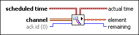

Requires: Base Development System
Reads an element from a Messenger channel at a scheduled time. The endpoint waits if no element is available in the channel at the scheduled time.
You can drop this endpoint on the block diagram by right-clicking a Messenger channel terminal or wire and selecting Create»Channel Reader»Messenger»Read Scheduled.
